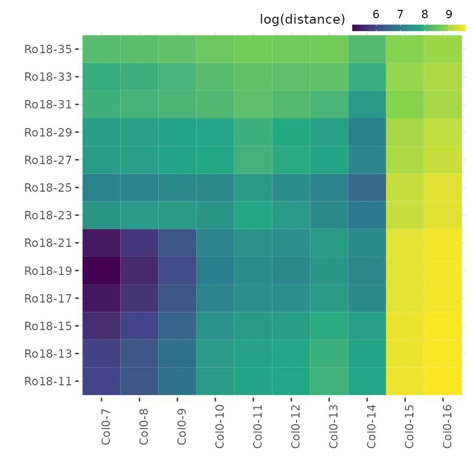

Visualising results
visualise-results.RmdAfter running registration function scale_and_register_data() as shown in ruthkr.github.io/GREAT/articles/register-data.html, users can get summary and visualise the results as illustrated in the figure below.

Get summary from registration results
The total number of registered and non-registered genes can be obtained by running function summary_model_comparison() with registration_results$model_comparison_df as an input.
Function summary_model_comparison() returns a list which contains three different objects:
-
df_summarycontains result summaries of the registration results, -
registered_genesis list of gene accessions which were successfully registered, and -
non_registered_genesis a list of non-registered gene accessions.
# Get all of summary
all_summary <- summary_model_comparison(registration_results$model_comparison_df)
all_summary$df_summary %>%
knitr::kable()| Result | Value |
|---|---|
| Total genes | 10 |
| Registered genes | 10 |
| Non-registered genes | 0 |
| Stretch | 1.5, 2, 2.5, 3 |
| Shift | [-3.5, 1.5] |
List of gene accession which were registered can be viewed by calling:
all_summary$registered_genes
#> [1] "BRAA04G005470.3C" "BRAA09G045310.3C" "BRAA03G051930.3C" "BRAA06G025360.3C"
#> [5] "BRAA02G043220.3C" "BRAA03G023790.3C" "BRAA05G005370.3C" "BRAA02G018970.3C"
#> [9] "BRAA07G030470.3C" "BRAA07G034100.3C"Plot registration results
Function plot_registration_results() allows users to plot registration results of the genes of interest.
# Plot registration result
plot_registration_results(registration_results$imputed_mean_df, ncol = 3) Users also have an option to include information or label on the plot whether particular genes are registered or not, as well as the registration parameters by include model comparison data frame as shown below.
Users also have an option to include information or label on the plot whether particular genes are registered or not, as well as the registration parameters by include model comparison data frame as shown below.
# Plot registration result
plot_registration_results(registration_results$imputed_mean_df, registration_results$model_comparison_df, ncol = 3)
To only include same time points between samples, users can set sync_timepoints = TRUE.
Analyse similarity of expression profiles overtime before and after registering
Calculate sample distance
After registering sample data, users can compare overall similarity before and after registering using the function calculate_between_sample_distance().
sample_distance <- calculate_between_sample_distance(registration_results$mean_df,
registration_results$mean_df_sc,
registration_results$imputed_mean_df,
accession_data_ref = "Ro18")Function calculate_between_sample_distance() returns a list of seven data frames:
-
distance_mean_dfis distance of mean expression values. -
distance_scaled_mean_dfis distance of scaled mean expression (all genes). -
distance_scaled_mean_df_only_nonregis distance of scaled mean expression (only not-registered genes). -
distance_scaled_mean_df_only_regis distance of scaled mean expression (only registered genes). -
distance_registered_dfis distance of registered & scaled mean expression (all genes). -
distance_registered_df_only_regis distance of registered & scaled mean expression (only registered genes).
Plot heatmap of sample distances
Each of these data frames above can be visualised using function plot_heatmap().
# Plot heatmap of mean expression profiles distance before scaling
plot_heatmap(sample_distance$distance_mean_df)
# Plot heatmap of mean expression profiles distance after scaling
plot_heatmap(sample_distance$distance_scaled_mean_df)
# Plot heatmap of mean expression profiles distance after registration process
plot_heatmap(sample_distance$distance_registered_df_only_reg, same_max_timepoint = TRUE, same_min_timepoint = TRUE)